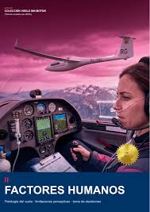

Optimización de Rutas de Tráfico Aéreo
Estudio de gestión de espacio aéreo para la reducción de consumo de combustible y tiempos de espera en aproximación mediante algoritmos predictivos.
Estudio de gestión de espacio aéreo para la reducción de consumo de combustible y tiempos de espera en aproximación mediante algoritmos predictivos.

Análisis de fatiga operacional y gestión de recursos de tripulación (CRM) evaluados a través de escenarios de simulación de vuelo avanzada.
Implementación de sensores IoT y análisis de vibraciones en motores de aviación comercial para detectar fallas antes de su ocurrencia en vuelo.
Diseño de protocolos de mitigación de riesgos y reporte de incidentes en aeropuertos internacionales bajo normativas de la OACI.